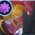

- 세대
- 성숙기
- 종족
 데이터
데이터- 속성
 어둠
어둠- 소비 메모리
- 8
- 장비 슬롯
- 1
스테이터스 (Lv.99)
HP108077위/81
SP2023위/81
ATK11372위/81
INT2072위/81
DEF12376위/81
SPD17720위/81
막대 길이는 등록된 디지몬 중 최고값 대비 비율이에요. 순위는 스테이터스가 등록된 디지몬끼리 비교해요.
필살기 1
번쩍구름  전기 SP 10
전기 SP 10
적 1체마법위력 75
디지몬 속성(어둠)과 다름
적 1체에 전기속성 위력 75의 마법공격. 대상을 10%의 확률로 마비 상태로 만든다.
상성별 대미지 배율 상대 종족(세로) · 속성(가로)상대 속성(세로) · 종족(가로)
×3 이상×2 이상보통×1 미만
| 상대 ↓ / → | |||||||||
|---|---|---|---|---|---|---|---|---|---|
| 백신 | ×2.00 | ×2.00 | ×2.00 | ×2.00 | ×3.00 | ×2.00 | ×2.00 | ×2.00 | ×2.00 |
| 데이터 | ×1.00 | ×1.00 | ×1.00 | ×1.00 | ×1.50 | ×1.00 | ×1.00 | ×1.00 | ×1.00 |
| 바이러스 | ×0.50 | ×0.50 | ×0.50 | ×0.50 | ×0.75 | ×0.50 | ×0.50 | ×0.50 | ×0.50 |
| 프리 | ×1.00 | ×1.00 | ×1.00 | ×1.00 | ×1.50 | ×1.00 | ×1.00 | ×1.00 | ×1.00 |
| ×2.00 | ×1.00 | ×0.50 | ×1.00 | |
| ×2.00 | ×1.00 | ×0.50 | ×1.00 | |
| ×2.00 | ×1.00 | ×0.50 | ×1.00 | |
| ×2.00 | ×1.00 | ×0.50 | ×1.00 | |
| ×3.00 | ×1.50 | ×0.75 | ×1.50 | |
| ×2.00 | ×1.00 | ×0.50 | ×1.00 | |
| ×2.00 | ×1.00 | ×0.50 | ×1.00 | |
| ×2.00 | ×1.00 | ×0.50 | ×1.00 | |
| ×2.00 | ×1.00 | ×0.50 | ×1.00 |
배율 칸을 누르면 계산식이 여기에 나와요.
SS(서포트스킬)
교묘한 계략
지력이 15% 상승한다.
계승기 (레벨업 습득) 3
이 디지몬이 레벨업으로 배우는 스킬이에요. 배운 스킬은 진화·퇴화해도 계속 쓸 수 있어요.
| 습득 Lv | 스킬 | 속성 | SP |
|---|---|---|---|
| 10 | 나이트메어 II 적 1체에 어둠속성 위력 75의 마법공격. 명중률 95%. | 6 | |
| 18 | 헬 크러셔 I 적 전체에 어둠속성 위력 20의 마법공격. 명중률 95%. | 4 | |
| 25 | 소닉 보이드 II 적 1체에 바람속성 위력 75의 마법공격. 명중률 95%. | 6 |
이 디지몬이 강한 상대 97펼쳐 보기
등록된 디지몬 중 필살기로 ×2 이상 대미지를 줄 수 있는 상대예요. 세대를 누르면 그 세대 목록이 보여요.
성숙기 같은 세대 22 · 다른 세대 상대는 도감에서 볼 수 있어요.
진화 가능 디지몬 4

묘티스몬
- 레벨 30 이상
- 공격력이 70 필요
- 지력이 90 필요
- 재능이 10 필요
데드메라몬
- 레벨 28 이상
- 최대 HP가 500 필요
- 공격력이 95 필요
팬텀몬
- 레벨 28 이상
- 최대 SP가 80 필요
- 지력이 80 필요
와이즈몬
- 레벨 28 이상
- 최대 SP가 75 필요
- 지력이 100 필요
진화 트리 · 위자몬까지 오는 길 + 다음 진화
왼쪽부터 진화 순서예요. 위자몬 오른쪽(점선 칸)은 바로 다음 진화 1단계예요. 그 뒤가 궁금하면 그 디지몬을 눌러 따라가 보세요. 선은 출발하는 디지몬의 색을 따라가요. 디지몬을 한 번 누르면 거기서 위자몬까지 가는 경로만 남고, 한 번 더 누르면 그 디지몬 페이지로 이동해요. 회색 칸은 아직 정보가 없는 디지몬이에요.
유년기I
유년기II
성장기
성숙기
완전체 ▸